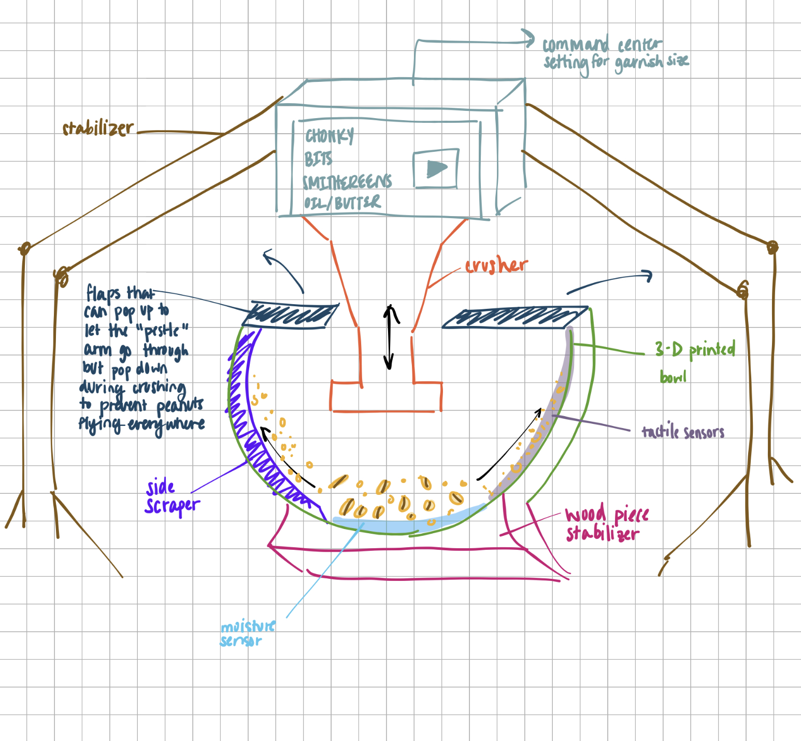

A very popular garnish used in Vietnamese cuisine is crushed peanuts. It adds a special nutty flavor to the dish. Without these crushed peanuts, the dish lacks depth. Despite its important role in Vietnamese cuisine,the garnish requires a time consuming process to make. In large batches (if the dish is supposed to feed more than 10 people at once), crushing peanuts can take upwards to two hours using the mortar and pestle. Therefore, a possible final project is to develop a mortar and pestle machine that can crush peanuts.
The machine will potentially include a "pestle" robot arm, a 3-D printed fish bowl, sensors at the bottom of the fish bowl, mortar scraper, application to send garnish orders, and wireless connection to send the garnish order.
Even though the garnish is crushed peanuts, some dishes may call for more chunkier bits while other dishes call for smaller pieces. While I don't have the skills to make a machine learning algorithm for this machine to recognize the size of the peanuts as they are being crushed, we can have a proxy through a sensor for wetness/moisture. As a the peanuts are being crushed, finer peanuts start to leak peanut oil. So the sensor at the bottom will tell the machine if it has reached the desired finess of the crushed peanuts. When you crush peanuts using a pestle, over time, there will be a wall of crushed peanuts that get stuck to the sides, and those do not receive crushing action, which is located in the center. Therefore, there will also be sensors that can identify if something is stuck onto it. If yes, then the machine will have a scraper, like a windshield wiper, that scrapes the inner sides of the "mortar" so that those peanuts get placed back into the center.

This final project was filled with many bumps from start to finish. The first was that I had to completely change my product design.
GEARS:
After my minimum viable product was able to move up and down, I went with the assumption that my final product will look similar enough to it except with the ability to hold up a pestle looking object. My MVP was centered around a plate with a motor stepper attached underneath the plate. The stepper motor was attached to a lead screw that had a guiding rail. The idea was that a pestle could be attached somewhere along the lead screw. Come closer to the project’s due date, I realized two things: There isn’t a way to print a pestle that could generate enough force when going up and down to crush peanuts. 3D prints are very light. Two, if I am using a weight instead, my current design would be unable to move it because it’s actually pretty weak. The motor can’t supply that much force by itself.
So, I had to redesign my project. Going back to the drawing board, I placed in some gears. How gears work is that they can amplify the force that was initially sourced from. Here is a quick physics lesson:
I want to have more settings for my peanut crusher, so like very chonky to very well grinded like powder. I also want this to be user-controlled through a web server. This was the initial plan and why I used an ESP32, but troubleshooting the stepper motor took a long time, and I could not code a web server.